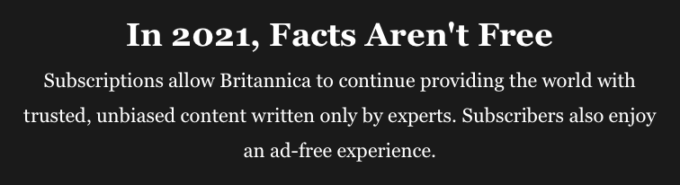

A CSS TV-screen
Fig. There was a time when television was not 24/7. Then came the time when 24/7 was a curse.
#tv {
position: relative;
width: 260px; /* e.g. */
height: 194px; /* e.g. */
border: 1px solid #eef5df;
border-radius: 50% / 10%;
background: #fff url("nrk.png") center no-repeat;
}
#tv:before {
position: absolute;
top: 10%;
right: -5%;
bottom: 10%;
left: -5%;
background-color: #fff;
border-radius: 5% / 50%;
content: "";
z-index: -1;
}
/* For details, see:
https://developer.mozilla.org/en-US/docs/Web/CSS/border-radius
https://css-tricks.com/the-shapes-of-css
*/Homage to the cathode ray tube
Reading up on television, what better source to consult than Encyclopædia Britannica?
“The opening scene of Shakespeare’s Henry IV introduces the character Rumour, upon whom the other characters rely for news of what is happening in the far corners of England. … For ages it remained a dream, and then television came along, beginning with an accidental discovery. In 1872, while investigating materials for use in the transatlantic cable, English telegraph worker Joseph May realized that a selenium wire was varying in its electrical conductivity. Further investigation showed that the change occurred when a beam of sunlight fell on the wire, which by chance had been placed on a table near the window. Although its importance was not realized at the time, this happenstance provided the basis for changing light into an electric signal.”
Television?
“The word is half Greek and half Latin. No good will come of it.”
But…
…by 1928 the General Electric Company had begun regular television broadcasts and in 1929 John Logie Baird convinced the British Broadcasting Corporation to allow him to produce half-hour shows at midnight three times a week.
Well, this is as far as I will refer to my research on Britannica. Popping up on my screen was the following message:
And I totally understand. We all have to scrape out a living. So, should you have been teased by the above, shell out for Britannica's 30%-off subscription. You can trust them. Believe me. I am not going to copy/paste their information for your purse or convenience. Oh, no. Subscribe!